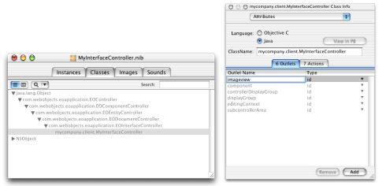

To set the image in an image view, you need access to the widget in the controller class. This is described in "Programmatic Access to Interface Components". To review, to get programmatic access to user interface elements, you need to add outlets to File's Owner, associate user interface widgets with those outlets, and add instance variables for the outlets to which you want programmatic access.
To add an outlet, switch to the Classes pane in the nib file window and select the class with which File's Owner is associated. Bring up the Info window and choose Attributes from its pop-up list. Switch to the Outlets pane and click Add to add a new outlet. Name the new outlet "imageview." Refer to Figure 18-1.
Figure 18-1 Add a new outlet
Now you're ready to add the image view widget to the interface.